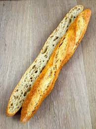

Donde cada bocado es una caricia al alma. Pan recién horneado, pasteles invisibles y mucho amor en cada receta.
Ver Nuestros Productos de calidad de dulzura
Hechas con masa madre y horneadas lentamente para una corteza crujiente y un interior esponjoso.

Laminados a mano con mantequilla de alta calidad. Perfectos para el desayuno o la merienda.

Decoradas con frutas frescas y crema pastelera casera. Ideales para celebraciones.
“¡El mejor pan que he probado en años! Cada mañana vengo a por mi baguette y un café. ¡Un ritual que no cambio por nada!”
“Pedimos una tarta para el cumpleaños de mi hija y fue el centro de atención. ¡Hermosa y deliciosa!”
“La atención es increíble, el olor al entrar... ¡y el sabor! No hay panadería como esta en la ciudad.”